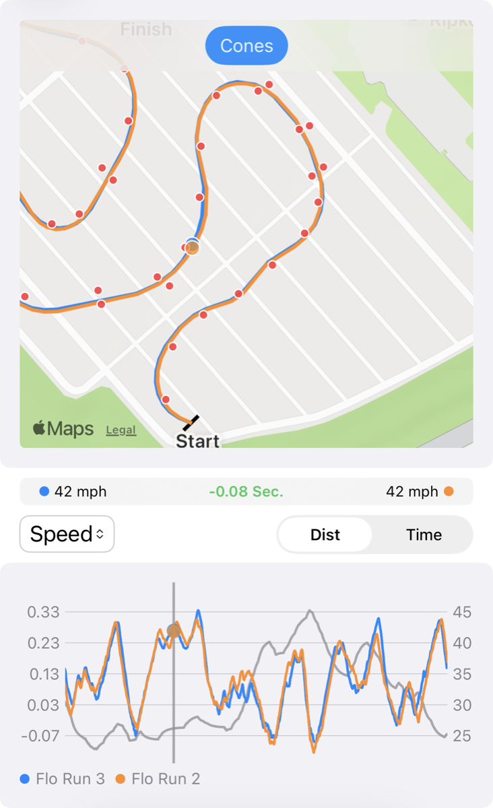
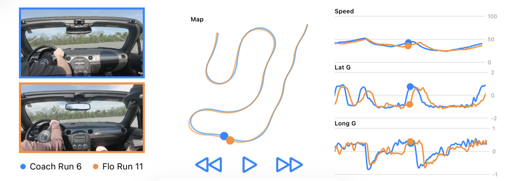

Features
- Map the course, including the cones
- Record your runs with GPS, video, OBD2 and accelerometer data
- Analyze your runs with GPS traces, video, speed vs distance plots, time deltas, and g-force plots
- Synchronize timing starting from any point in a run to see the exact time gained/lost at a specific point
- Automatically start and stop recording for hands-free data logging
- Export video with data overlays
- Export your data
- Import runs from others


Getting Started
All you need to start is your iPhone. Unlike most data loggers, no external GPS hardware is required. The app's sensor fusion algorithm combines the phone's 1Hz internal GPS with its accelerometer data to produce a smooth 20Hz trace. That may be enough for some users to get started with.
When you're ready to step up, add an external BLE GPS module for native high-rate data, and an OBD2 adapter to layer in some additional data like throttle position and RPM. See Data Collection for recommended devices.
Data Collection
The data collection is based on GPS/GNSS, video, and OBD2 data and is compatible with various devices. This app also has strong support for DIY GPS devices, natively supporting two projects.
Recommended GPS Devices
These devices connect directly to the app for the best latency and full 25Hz data rates.
- RaceBox Mini
- RaceBox Mini S
- RaceBox Micro
- Opensource DIY GPS module (under $50!)
- Opensource DIY GPS + IMU
Other GPS Devices
These devices connect through the iOS Bluetooth manager and will have reduced sample rates for data collection. You may need to enable the "Sensor Fusion" algorithm to increase the data sample rates
Recommended OBD2 Devices
GoPro Cameras
This app is compatible with any GoPro camera that supports a WiFi connection to the phone. Any GoPro model from 5 to 13. Simply connect the phone to the GoPro's WiFi network and enable GoPro control in the app settings.
Internal Phone GPS
The internal phone GPS will only transmit data at a rate of 1Hz. To work around this, the app includes a sensor fusion algorithm to interpolate between the slow 1Hz GPS readings using the phone's IMU data.
FAQ
Do I need an external GPS device to get started?
No. The app uses sensor fusion to combine your iPhone's 1Hz internal GPS with accelerometer data, producing a 20Hz trace. This may be enough for some basic analysis but a good external GPS device is highly recommended for series data analysis.
The sensor fusion algorithm is producing some strange traces.
Since this algorithm uses the phone's IMU to interpolate between the slow GPS updates the phone needs to be rigidly attached to the car in order to "feel" the car's motions. Additionally, the phone needs to stay in the exact same orientation for the entirety of the run.
Does it work without cell or data service at the venue?
Yes. All recording and analysis happens on-device, so you can run the app anywhere. Internet is only needed to download the app and share runs.
Do I need to set up the start and finish lines ahead of time?
No. Setting up the start and finish lines ahead of time is optional. Alternatively, you can disable this in the settings and record data freely. Then during data analysis the start and finish lines can be added and all of the recorded data will be reparsed.
Is OBD2 required?
No. OBD2 is optional and adds some telemetry like RPM, throttle position, and OBD2 speed on top of GPS and accelerometer data. The app works fine without it.
Can I record video without a GoPro?
Yes. The app records video with either the internal iPhone camera or a GoPro.
How do I share runs with other drivers?
Runs can be exported and imported between devices, so you can swap data with friends, instructors, or fellow competitors to compare lines and find time. You can even share start/finish lines so that all comparisons are done using the same reference points.
Will it drain my phone's battery?
It will drain a phone's battery faster; however, this app has been used at a full 7-hour test and tune without needing to be plugged in. It's recommended to keep the phone plugged in as much as possible while in use since there are many other factors that contribute to how long a phone's battery lasts.
Is there an Android version?
The app is iOS-only.